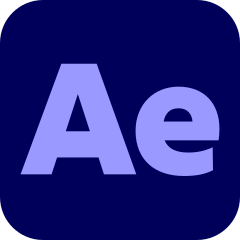
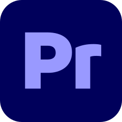
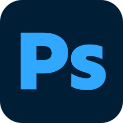

Diseñador
Multimedia
DISEÑO MULTIMEDIA · MOTION GRAPHICS · EDICIÓN DE VIDEO
Air Max
Animación de producto conceptual
EJERCICIO INDEPENDIENTE · NO OFICIALTrabajos seleccionados
Las piezas que utilizan marcas reconocidas son ejercicios conceptuales independientes, no campañas oficiales. Para ver trabajos realizados para clientes, consultá la sección de experiencia profesional.
Sobre mí

Tengo experiencia profesional en filmación, edición audiovisual y comunicación visual para empresas. Me especializo en motion graphics: animar piezas cuadro por cuadro, darle ritmo a una idea y contarla en movimiento. Actualmente estudio Diseño Multimedial en la Escuela Da Vinci, y desde ahí complemento el motion con diseño digital y nociones de UI/UX — sin que sea mi foco principal.
Actualmente estoy sumando desarrollo frontend (HTML, CSS, JavaScript) a mi caja de herramientas, para poder construir y no solo diseñar las experiencias que imagino. Este mismo sitio es parte de ese proceso. Manejo inglés B2 — nivel intermedio.
Diseño Multimedial Da Vinci · En curso
Producción Musical ORT Argentina · Recibido
Inglés Nivel B2
HERRAMIENTAS
After Effects
Premiere Pro- Illustrator

Photoshop- Figma
Experiencia & formación
2022 — 2025Tecnoimagen
Filmación, edición y desarrollo visual de piezas audiovisuales para las redes sociales y el sitio web de Tecnoimagen.
Solicitar ejemplos2022 — 2024MasHumanos
Edición audiovisual y diseño visual de contenidos para la comunicación interna de una consultora de formación y desarrollo organizacional, enfocada en liderazgo, cultura empresarial y bienestar laboral.
2023 · 2 MESESHardrockexpert Cocktails
Edición y diseño visual de contenidos publicitarios para promocionar cócteles en lata, incluyendo variedades como Martini, Piña Colada y Mojito.
Lo que hago
01Motion graphics
Tipografía, formas y productos en movimiento. Animaciones con ritmo e identidad.
02Edición audiovisual
Montaje y diseño sonoro para darle forma a una historia y mantener la atención.
03Diseño digital
Identidad visual e interfaces claras. Piezas que conectan estética y comunicación.